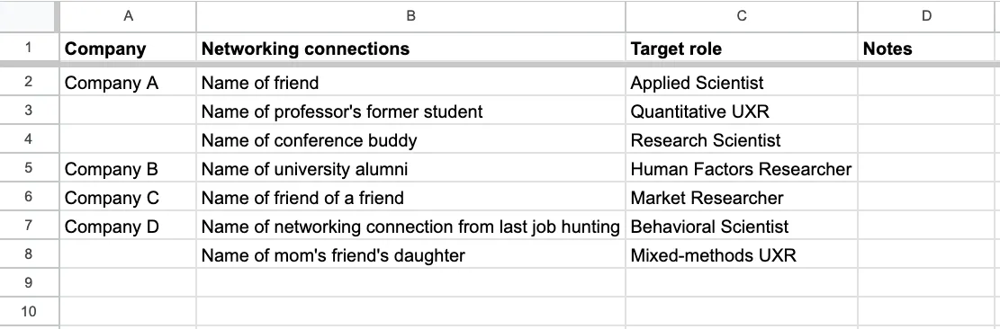

Some common advice that I hear is “Put yourself out there!” “Go to networking meetups!” “Meet people at recruitment events & job fairs!” This advice is for extroverts. During grad school, I watched my Extroverted Friend attend and even lead many of these meetup events. He’s a social butterfly who excels at making connections with lots of people in group and crowd settings.
We both aggressively avoided applying to the black hole of cold applications, but used different networking strategies.
The Extroverted Friend and I actually landed jobs almost at the same time. When the both of us have been asked to speak on alumni panels about networking, it’s clear that our strategies are almost entirely based on our personalities & different preference for socialization—or, for me, tolerance of social exhaustion.
Here are some ways that I protect my limited social energy:
#1 Organize your networking connections into 2 lists
You might think of these lists as differentiated by your goals and/or timeline:
- Learning vs. (Informal) Interviewing — The difference is “hi, please teach me everything since I know nothing”
vs. “hi, I am confident that I know enough that I’d like to know about job opportunities that you might be able
to connect me to”
- Learn the industry language from people in list #1. Then apply it in your next conversations with people in list #2.
- Learn how each company and team may be bespoke in their tool usage, unique job titles, and ways of thinking (list #1). Industry is not a monolith! Then showcase that you have a deep knowledge and awareness of these differences (list #2).
- Describe your skillset and ask which roles at that company best fit you (list #1). Then ask who has headcount for those roles (list #2).
- Resume feedback vs. Resume review
- Get feedback on how to improve your resume overall or how to cater to different industries/companies/roles (list #1). Then you can directly ask for a referral or for review on a finalized resume and people will often spontaneously offer a referral (list #2).
- Who can introduce you to a manager vs. The Manager
- Ask if there headcount on their/other teams (list #1). Informally interview for that open headcount (list #2).
- I need a job one day vs. I need to job tomorrow
- Explore the range of job opportunities at a company or team, such as internships, fellowships, contractor roles, or full-time roles (list #1). Ask which roles are open today (list #2).
People in list #1 can help with developing your networking muscles and to be introduced to others. These people tend to be “safer” to talk to, i.e, admit what you don’t know but want to learn.
People in list #2 are the connections that you really want to stick the landing with. Best case scenario, this networking chat is informally the first interview for your dream job.
The point of this 2-list organization is extract the most out of each networking interaction, so that you don’t burn yourself out. And to ensure that each conversation gets you one step closer to landing a job.
These lists are flexible. Often networking connections move from the list #1 to the list #2 as they level up in their careers. It’s not bad that you confided in them that you were still learning all the things in your last conversation. Actually, I’ve been told that this can increase respect for you because it shows that (1) you’ve taken their advice and applied it; and (2) clearly you’ve been dedicated to the same passion all this time.
Note that this networking advice is for 1:1 chats. This is my preferred way to form genuine connection with other people, compared to groups of people like at meetups.
#2 Use Google Sheets (or anything similar) to organize your networking connections and job applications by dream jobs
There are both not enough jobs and too many (irrelevant, ill-fitting) jobs.
- Start by organizing a list of your dream companies. This requires worthwhile introspection to know whether & why you would be happy at that company.
- List all the people that you are connected to per each company. Don’t underestimate the power of secondary & tertiary connections. Once you make a (genuine) connection with that person, they become a first-degree connection.
- Keep a list of target roles as you learn about them.
This organization has helped me to constrain the number of networking chats that I have but increasing how productive they are. Ultimately, this also constrains the number of job applications that I expend energy on. Many of these networking chats have led to referrals so those applications have gotten me further than cold applying.
This also helps me keep track of my personal north stars. What makes me feel passionate about working with these different communities of people. Otherwise, I am prone to burnout when I lose track of this and am endlessly submitting cold applications into the black hole.
Here’s an example:

In your notes section, keep track of:
AI was not used to write, edit, or brainstorm this post. All mistakes and em dashes are my own.